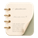

YourNotes
Quick Portal
◐
Capture
Recent
0
Tools
Write it down
Save as checklist item
Add current page
Save capture
Ctrl↵
Nothing captured yet
Save text here or use the page context menu.
Copy all captures
Focus timer
25:00
Start
↺
Projects & full notes
Open in full app
Pinned dashboard
Open in full app
College files & PDFs
Install full app
Safe Haven
Install full app